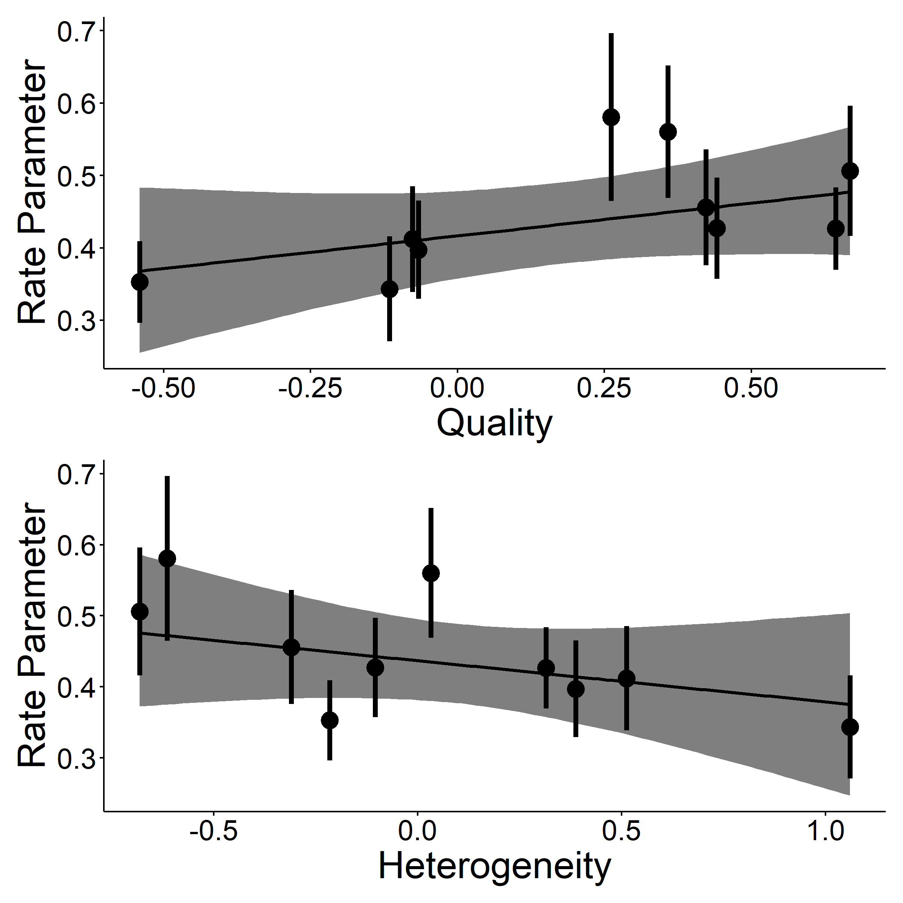
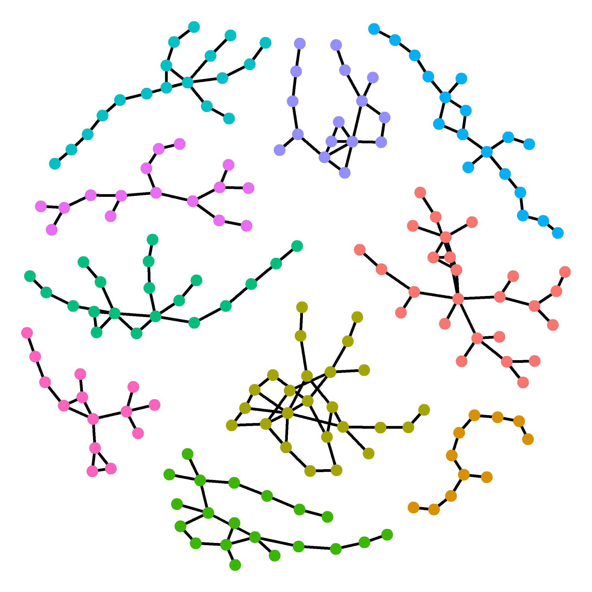

Research
Research
How is Dispersal Influenced by the Local Environment
|  |
The main focus of my dissertation is to understand how the local habitat influences dispersal dynamics. I am using Coryphopterus hyalinus/personatus as a model system to understand these dynamics because, despite being generally poorly studied these two species contain characteristics making them an ideal study system for these questions. Namely, an abundant, short-lived sedentary adult life-history combined with generally localized dispersal behaviour.
What are the evolutionary impacts of living near close relatives?
|  |
One of the instigating findings leading me to use Coryphopterus as a study system to understand dispersal processes is finding in my MS work that there are many close relatives living much closer together than was previously anticipated. This finding has also led to another research interest of mine, what are the consequences of living with close relatives, good and bad?
What is “good quality” habitat from the perspective of Coryphopterus hyalinus/personatus?

|
Part of understanding how habitat quality influences dispersal is to first understand what counts as “good” habitat from the perspective of the Coryphopterus themselves. To try and get a fish eye view of what makes a particular part of the coral reef a better/worse place for a Coryphopterus to live I used structure-from-motion photogrammetry to create 3D reef models which I then used to model the distribution of Coryphopterus on the reef.
How do Coryphopterus hyalinus and C. personatus maintain species boundaries despite living together?
Coryphopterus hyalinus and C. personatus both look remarkably similar and they both live spread throughout the Caribbean with nearly entirely overlapping depth distributions and are seemingly the same ecologically. So, why are they two separate species? Do they hybridize much? Initially, I hypothesized that in areas of distributional overlap they would live in distinct shoals spread across the reef, so while at a macro-scale they were overlapping, and a micro-scale they were actually spatially isolated. This turns out not to be the case (in review in Marine Biology). However, despite living on top of each other we find very little evidence of wide-spread hybridization. So what is the mechanism maintaining this species boundary, and what does that teach us about speciation?
|
|